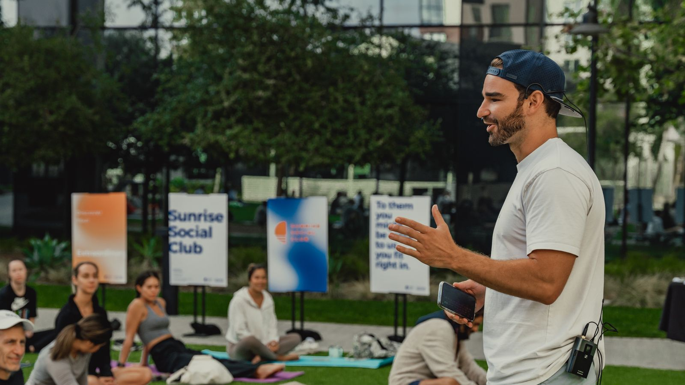
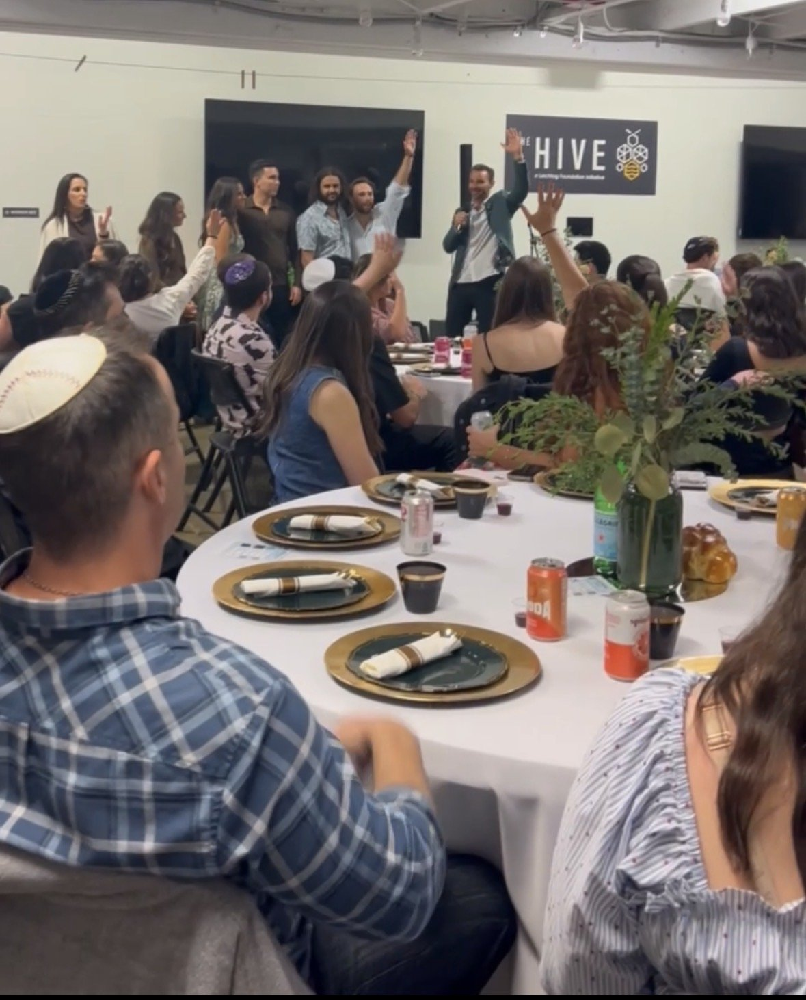

As Seen In


I help people and businesses tap into their full intelligence—human, artificial, and collective.
Whether it's leading a group into an icy river in Iceland, a Shabbat dinner that turns strangers into family, or an AI agent transforming how a company operates, I'm building ways for people to tap into their full intelligence.

The body, the intuition, the inner work
I teach frameworks, share stories, and facilitate retreats around breathwork, cold immersion, and the inner work that makes everything else possible.

Human strategy meets AI firepower
We get under the hood with founders to build custom solutions powered by Cynthia, our proprietary AI platform. It's time to work smarter, move faster, and build things you didn't think were possible yet.

Community, conversation, gathering
I host events, gatherings, and build communities designed to bring The Others together. Friendpower is stronger than willpower.

I'm a Moroccan-American Jewish kid from San Diego with the last name Church. I followed cosmic breadcrumbs instead of a plan, and they led me to co-found a $20M+ company, write a book, finish an Ironman, and land on Forbes 30 Under 30. These days I'm building at the intersection of human intelligence and artificial intelligence: co-founding an AI agency, hosting a podcast, writing, and building community. I believe the most powerful thing you can learn is how to listen—to your body, to something greater than yourself, and to each other.
Every day I share one message—an insight, a perspective, a tool, or a tidbit to help you on your way. It's a free community of people who are building lives on their own terms, supporting each other along the road. No noise, no spam. Just signal.